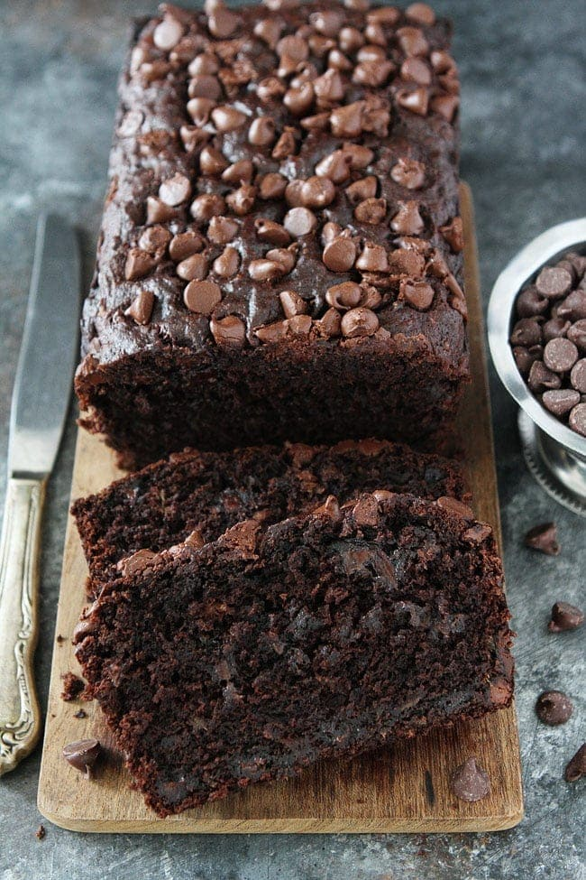

Chocolate Banana Bread Recipe

Description
This is a very different banana bread recipe; it has chocolate chips, cocoa, and a touch of sour cream. Delicious!
Ingredients
- 1 cup margarine, softened
- 2 cups white sugar
- 4 eggs
- 6 bananas, mashed
- 2 teaspoons vanilla extract
- 3 cups all-purpose flour
- 2 teaspoons baking soda
- ¼ cup unsweetened cocoa powder
- 1 cup lite sour cream
- 1 cup semisweet chocolate chips
Steps
- Preheat oven to 350 degrees F (175 degrees C). Lightly grease two 9x5 inch loaf pans.
- In a large bowl, cream together margarine, sugar and eggs. Stir in bananas and vanilla. Sift in flour, baking soda and cocoa; mix well. Blend in sour cream and chocolate chips. Pour batter into prepared pans.
- Bake in preheated oven for 60 minutes, or until a toothpick inserted into center of a loaf comes out clean.